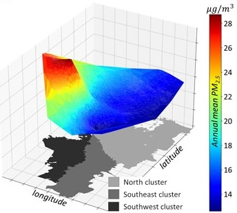
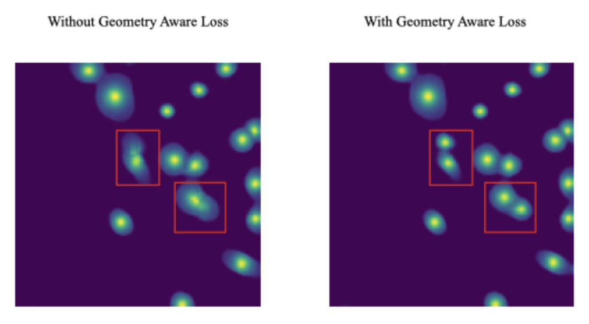

|
Research
I am interested in geometry related problem, such as latent space model for graph, optimal transportation and topological data analysis.
I am also generally fascinated by interdisciplinary problems in data science.
The following is a list of past research projects:
|
|

|
Enriched spatial analysis of air pollution: Application to the city of Bogotá, Colombia
Zhexu Jin, Mario Andrés Velásquez Angel, Ivan Mura, Juan Felipe Franco
Front. Environ. Sci., 2022
[doi]
[bibtex]
[code]
We used spatial temporal kriging to identify a highly polluted cluster located in the south-west cluster in the city of Bogotá. Within this cluster, we observe a disproportionate representation of people from several vulnerable groups.
|
|

|
Towards Geometry-Aware Cell Segmentation in Microscopy Images
Zhexu Jin, Gaoyang Li, Huansheng Cao, and Dongmian Zou
Neurips 2022 Workshop: Medical Imaging Meets Nuerips
[abstract]
[poster]
Proposed to regularize geometry of the segmentation output produced by network using losses inspired by persistent
homology
We sped up the loss computation via a 1-dimensional simplification and implemented the new loss based on lower star
filtration. Benchmarked the proposed method against other commonly used instance segmentation methods
|
|
|
Lab/Discussion Teaching Assistant:
-
STAT 107 Data Science Discovery, Fall 2023*
-
STAT 107 Data Science Discovery, Spring 2024*
*: List of Teachers Ranked as Excellent By Their Students
Grading Teaching Assistant:
-
STAT 426 Statistical Modeling II, Fall 2024
-
STAT 426 Statistical Modeling II, Spring 2025
|
Basically
Blog Posts
|
More to come!
|
This guy makes an awesome website.
|
|
{kind=link}